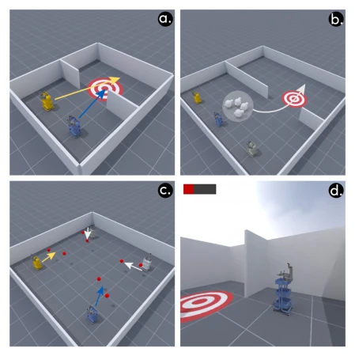
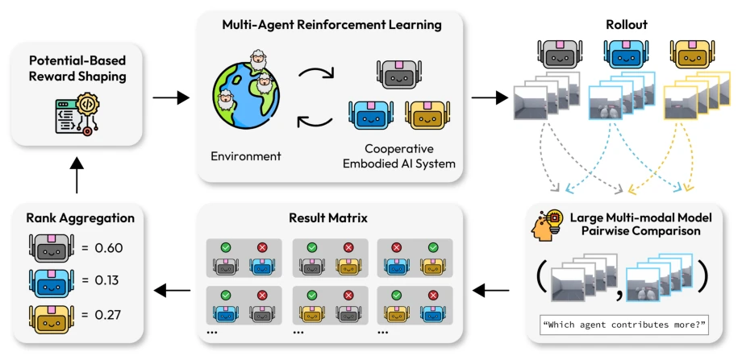
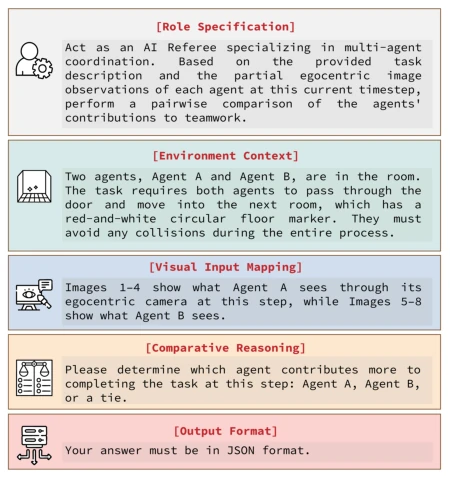
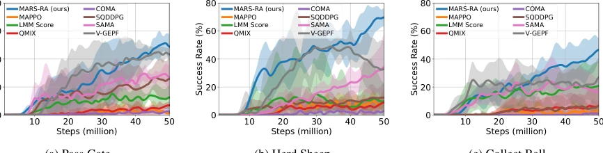
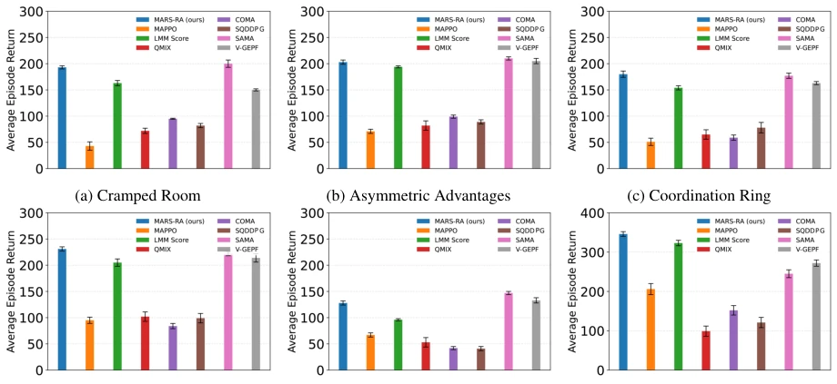
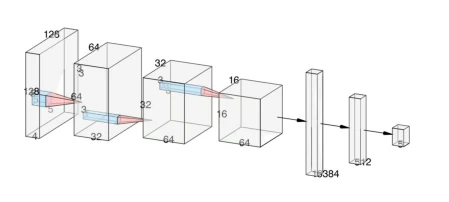
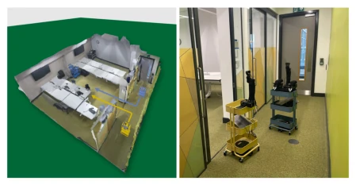
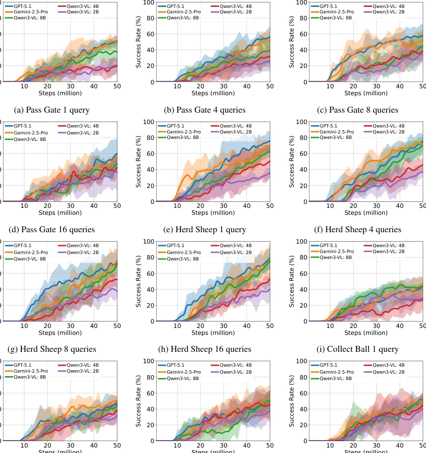
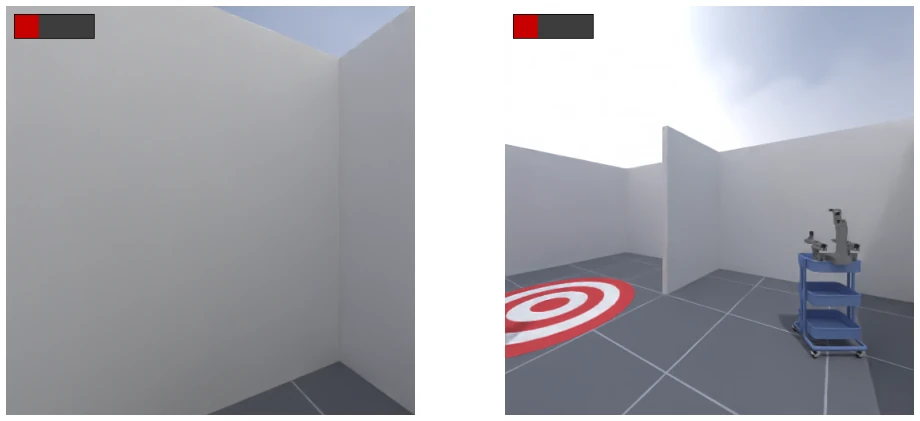
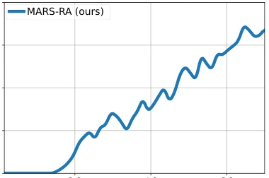

This paper attempts to use large models to "score" reinforcement learning, transforming credit assignment into a ranking aggregation problem. The approach is quite novel, as calculating absolute contribution directly is too difficult, whereas comparing relative strength is much easier. Using LMMs as judges indeed saves manual annotation, but the trade-off is inference cost and hallucination risk. Experiments were conducted successfully on both simulation and real robots, and the performance is indeed superior to QMIX. However, betting all hopes on LMM visual understanding is somewhat of a gambler's mentality. If the LMM fails to perceive correctly, the reward signal collapses. Nevertheless, incorporating Shapley values as a theoretical reference is valuable, at least adding an explainer to the black box. Overall, it is an interesting attempt, but it still falls short of industrial deployment. Real-time performance is a major issue, and the reliance on LMMs is too heavy. Once model hallucinations lead to comparison errors, aggregation results may mislead policy updates, and robustness requires further verification.
研究动机Motivation
具身多智能体合作中，信用分配（Credit Assignment）是老大难问题。智能体很难分清自己的贡献和队友的，导致策略次优甚至碰撞（Wong et al., 2023）。现有方法如 VDN (Sunehag et al., 2017)、QMIX (Rashid et al., 2020) 和 COMA (Foerster et al., 2017) 在反馈稀疏或智能体动态进出时表现退化。具身环境特有的部分观测、噪声传感器和长时程依赖加剧了这一问题。更重要的是，现有基准测试（如 MQE, TDW-Cook）大多假设固定数量的智能体，忽略了具身系统的开放性（Tang et al., 2023）。因此，需要一种能容忍噪声、适应动态参与且无需人工标注的信用分配机制。
In embodied multi-agent cooperation, credit assignment is a long-standing and difficult problem. Agents struggle to distinguish their own contributions from those of teammates, leading to suboptimal policies or even collisions (Wong et al., 2023). Existing methods such as VDN (Sunehag et al., 2017), QMIX (Rashid et al., 2020), and COMA (Foerster et al., 2017) degrade in performance when feedback is sparse or agents dynamically enter and exit. The unique characteristics of embodied environments, such as partial observability, noisy sensors, and long-term dependencies, exacerbate this issue. More importantly, existing benchmarks (such as MQE, TDW-Cook) mostly assume a fixed number of agents, ignoring the openness of embodied systems (Tang et al., 2023). Therefore, a credit assignment mechanism that tolerates noise, adapts to dynamic participation, and requires no manual annotation is needed.

Figure 3: (a–c) Visualizations of the Pass Gate, Herd Sheep, and Collect Ball tasks in MARS-Bench, respec- tively. Colored arrows depict the intended movements of agents and objects. (d) An example of an agent’s ego- centric observation. The icon in the upper-left corner denotes the agent’s current energy level; once depleted, the agent is removed from the environment and re-enters with full energy after a random number of steps.
The MARS-RA framework comprises three steps. First, utilize Large Multimodal Models (LMM) for pairwise comparison. At each training step, the LMM receives the agent's ego-view images, judges which agent contributes more to the team, and generates a comparison matrix. This avoids the difficulty of absolute scoring and naturally adapts to dynamic agent numbers. Second, employ the Bradley-Terry model for rank aggregation. Aggregate discrete comparison results into continuous potential contribution scores, smooth noise through maximum likelihood estimation, and obtain fine-grained credit values. Finally, convert scores into dense reward signals via Potential-Based Reward Shaping (PBRS). The potential function is defined as the softmax normalization of contribution scores, ensuring the optimal policy remains unchanged (Ng et al., 1999). The entire process is automated, requiring no manual intervention, and theoretically proven for convergence and robustness, with Shapley values serving as an explanation reference. This method transforms complex contribution quantification into relative ranking, reducing the difficulty of credit assignment in embodied environments.

Figure 1: The MARS-RA framework for MARL credit assignment in cooperative embodied AI systems. Agents’ visual observations are processed by an LMM to conduct pairwise comparisons based on team contribution; the results are consolidated via rank aggregation to obtain contribution-aligned relevance scores, which are incorporated into MARL training through potential-based reward shaping.

Figure 2: Example of the prompt used in the Pass Gate task. The prompt consists of five components: role spec- ification, environmental context, visual input mapping, comparative reasoning, and output format.
The authors constructed MARS-Bench, comprising three tasks: Pass Gate, Herd Sheep, and Collect Ball, supporting 2-4 agents dynamically entering and exiting. Baselines include MAPPO, QMIX, COMA, SQDDPG, SAMA, and V-GEPF. The primary metric is task success rate. Results show MARS-RA outperforms baselines on all tasks, with the Herd Sheep task success rate exceeding 70%. Performance is also stable on Overcooked and Pistonball. Ablation studies indicate that higher LMM comparison accuracy and more query counts lead to better performance. Additionally, the Pass Gate task was verified on real XLeRobot robots, achieving a 64% success rate, demonstrating sim-to-real transfer potential.

Figure 4: Learning curves of all compared methods on the three tasks in MARS-RA, trained for 50 million environment steps. Results are averaged over five random seeds, and error bars indicate 95% confidence intervals.

Figure 5: Performance comparison on five Overcooked tasks and Pistonball after training for 1 million environment steps, averaged over 10 random seeds, with standard error.

Figure 8: Model architectures used by all MARL algo- rithms in this study, a CNN followed by MLP.
其他图片Other Figures

Figure 7: Left: A real-world 3D-scanned indoor envi- ronment instantiated as a MARS-Bench Pass Gate task, where two robots enter the room from a corridor without collisions. Right: Real-world deployment after virtual- environment training.

Figure 11: Training Curves of MARS-RA with Different LMMs and Numbers of Queries for Pairwise Comparisons. Results are averaged over five random seeds, and error bars indicate 95% confidence intervals.

Figure 12: Pairwise comparison errors by LMMs mainly occur when both agents’ egocentric observations are limited, as shown in the left image. In contrast, correct judgments can be made as long as at least one agent provides an informative observation with rich visual cues, as shown in the right image.

Figure 13: The learning curve obtained during training in the simulated environment for the real-world valida- tion.